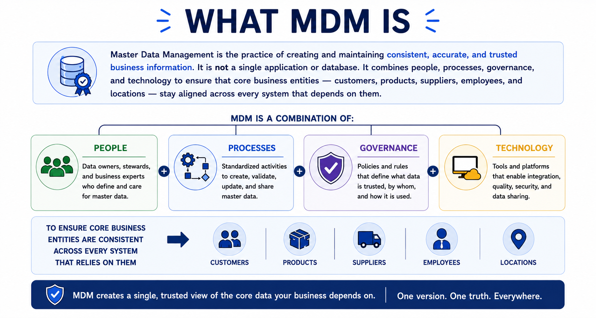
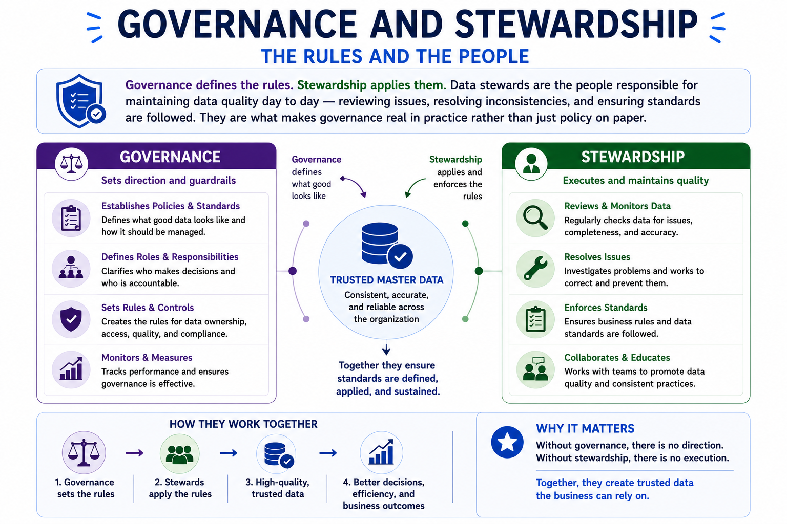

What Is Master Data Management
Module support notes
Understanding master data is only part of the picture. Organizations also need a way to manage that information consistently over time — across systems, teams, and processes. In a world where AI is increasingly driving decisions, analytics, and automation, that consistency is no longer optional. It is what separates organizations that can trust their AI outputs from those that cannot. That is where Master Data Management comes in.
Definition
MDM is not a technology project. It is an organizational capability that combines governance, stewardship, and technology to keep business information trusted over time — and to give AI systems the reliable foundation they need to produce consistent outputs.
What MDM is
Master Data Management is the practice of creating and maintaining consistent, accurate, and trusted business information. It is not a single application or database. It combines people, processes, governance, and technology to ensure that core business entities — customers, products, suppliers, employees, and locations — stay aligned across every system that depends on them.

Governance and stewardship
Good data does not happen accidentally. MDM relies on governance to define how data should be managed — who owns it, what the standards are, and how changes get approved. Without governance, different teams create their own versions of the same information and inconsistencies quietly multiply.
Governance defines the rules. Stewardship applies them. Data stewards are the people responsible for maintaining data quality day to day — reviewing issues, resolving inconsistencies, and ensuring standards are followed. They are what makes governance real in practice rather than just policy on paper.

The trusted view
One of MDM's most important outcomes is a single trusted view of each business entity. Instead of asking which system has the correct customer record, organizations establish one authoritative version — validated, governed, and shared across reporting, operations, analytics, and AI.
MDM and AI
AI systems do not generate their own business context — they inherit it from the data they are trained and operated on. When customer, product, or supplier records are duplicated or inconsistent, AI models receive conflicting signals that affect analytics, automation, and predictions. MDM directly addresses this by making business information more structured, governed, and reliable. The quality of an organization's AI outputs is inseparable from the quality of its master data.